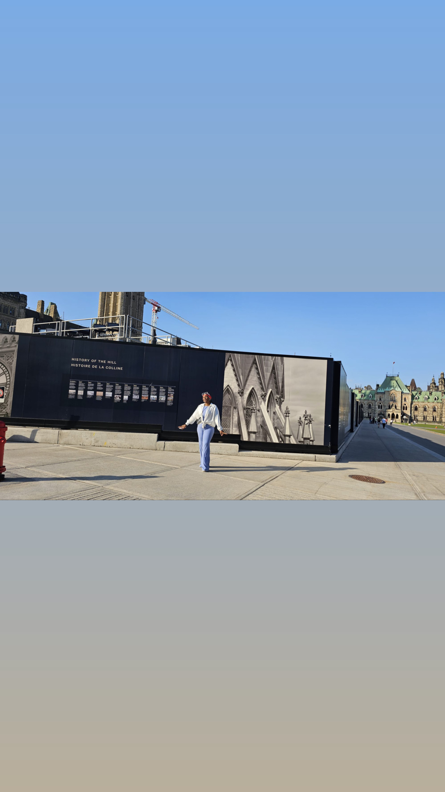

About Me
I am a dedicated student at AC , who has a deep passion for stories. Whether found within the pages of a novel or shared among friends and family, I love experiencing them. Reading has not only expanded my imagination but also my empathy, which has opened my eyes to the diverse tapestry of human experiences. The immersive world of web and graphic design fascinates me, and I am committed to mastering the art of crafting compelling digital experiences.
During my leisure time, I often enjoy spending time with my loved ones or getting lost in an intriguing novel. Every story, whether it's experienced in real life or read in a book, helps me gain a deeper understanding of the world. I'm fascinated by the potential of Interactive Media Design and its ability to create engaging narratives. To contribute meaningfully to this dynamic field, I'm constantly improving my skills as a designer. With each step forward in my education, I'm getting closer to my goal of becoming a versatile designer who can bring stories to life through interactive digital solutions.